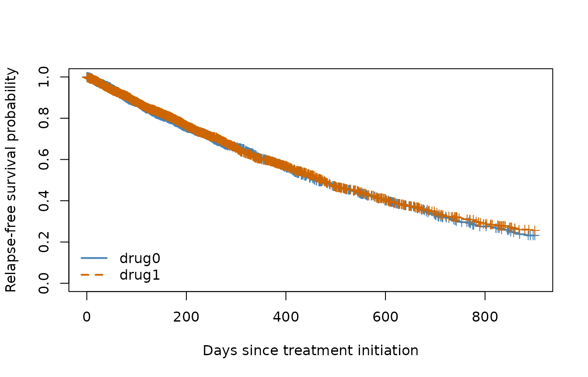

Average treatment effects for survival outcomes
November 18, 2026
Source:vignettes/Survival-examples.Rmd
Survival-examples.Rmd
This vignette estimates population-average treatment effects over a fixed horizon using synthetic survival data. The survival CATE example develops and validates conditional treatment-effect scores. Chapter 5 introduces marginal and conditional effects (Nguyen et al. 2026).
Example data
We generate 4,000 synthetic observations with
simulate_survival() and set a seed for reproducibility. The
data contain baseline characteristics, treatment, observed time and an
event indicator.
survival_data <- simulate_survival(n = 4000, seed = 20261114)Treatment is assigned according to the treatment model; its weights
can be changed to explore different treatment proportions and degrees of
overlap. For example,
simulate_survival(n = 4000, seed = 1, ps_weights = c(intercept = -1), conditional_hr = 0.8)
changes the propensity intercept and the conditional HR at age 48 with
no previous relapses. Named ps_weights and
lp_weights override the specified defaults; see
?simulate_survival for their definitions. The table below
summarizes baseline characteristics by treatment group.
| level |
Overall (n = 4000) |
drug0 (n = 1873) |
drug1 (n = 2127) |
|
|---|---|---|---|---|
| Age (mean (SD)) | 48.0 (8.8) | 43.9 (8.1) | 51.5 (7.8) | |
| Gender (%) | male | 1139 (28.5) | 520 (27.8) | 619 (29.1) |
| female | 2861 (71.5) | 1353 (72.2) | 1508 (70.9) | |
| Previous treatment (%) | drugA | 1827 (45.7) | 857 (45.8) | 970 (45.6) |
| drugB | 1399 (35.0) | 608 (32.5) | 791 (37.2) | |
| drugC | 774 (19.4) | 408 (21.8) | 366 (17.2) | |
| Previous medical cost ($) (mean (SD)) | 14581.8 (10056.0) | 14455.3 (9675.7) | 14693.1 (10380.4) | |
| Previous number of symptoms (%) | 0 | 1860 (46.5) | 880 (47.0) | 980 (46.1) |
| 1 | 1365 (34.1) | 642 (34.3) | 723 (34.0) | |
| >=2 | 775 (19.4) | 351 (18.7) | 424 (19.9) | |
| Previous number of relapses (%) | 0 | 1782 (44.5) | 850 (45.4) | 932 (43.8) |
| 1 | 1469 (36.7) | 681 (36.4) | 788 (37.0) | |
| 2 | 567 (14.2) | 252 (13.5) | 315 (14.8) | |
| 3 | 145 ( 3.6) | 71 ( 3.8) | 74 ( 3.5) | |
| 4 | 27 ( 0.7) | 14 ( 0.7) | 13 ( 0.6) | |
| 5 | 10 ( 0.2) | 5 ( 0.3) | 5 ( 0.2) |
The treatment and survival outcome variables have distinct roles:
We will use
yas the survival outcome, which is the number of days until the first relapse or censoring, whichever comes first.We will use
das the event indicator, where represents an event and represents censoring. The censoring rate is 61.8%.We will use
trtas the treatment variable, which has 2 drugs (drug0 and drug1).
For convenience, age is centered at 48 years and
previous_cost is centered at 14,362 USD and divided by
24,266 USD.
The Kaplan–Meier curves below show the observed relapse-free survival experience in each treatment group. Marks on the curves indicate censored observations. These are unadjusted group comparisons; differences between the curves may reflect baseline differences as well as treatment effects.
km_fit <- survfit(Surv(y, d) ~ trt, data = survival_data)
plot(km_fit, col = c("steelblue", "darkorange3"), lty = 1:2, lwd = 2,
mark.time = TRUE, xlab = "Days since treatment initiation",
ylab = "Relapse-free survival probability", ylim = c(0, 1))
legend("bottomleft", legend = c("drug0", "drug1"),
col = c("steelblue", "darkorange3"), lty = 1:2, lwd = 2, bty = "n")
For the estimators and their assumptions, see Methods for estimating average treatment effects.
Unadjusted treatment comparison
We first compare time to first relapse between treatment groups using a Cox model with treatment as the only predictor. This unadjusted, marginal association does not account for differences in patient characteristics.
output_cox <- coxph(Surv(y, d) ~ trt, data = survival_data)
summary(output_cox)
#> Call:
#> coxph(formula = Surv(y, d) ~ trt, data = survival_data)
#>
#> n= 4000, number of events= 1530
#>
#> coef exp(coef) se(coef) z Pr(>|z|)
#> trtdrug1 -0.02602 0.97431 0.05118 -0.508 0.611
#>
#> exp(coef) exp(-coef) lower .95 upper .95
#> trtdrug1 0.9743 1.026 0.8813 1.077
#>
#> Concordance= 0.502 (se = 0.007 )
#> Likelihood ratio test= 0.26 on 1 df, p=0.6
#> Wald test = 0.26 on 1 df, p=0.6
#> Score (logrank) test = 0.26 on 1 df, p=0.6The estimated hazard ratio (HR) for drug 1 versus drug 0 is 0.97. It compares instantaneous relapse hazards among patients still event-free and does not by itself establish a causal treatment effect.
We can examine the proportional-hazards assumption using scaled Schoenfeld residuals. A roughly horizontal curve is consistent with a constant HR over time; the dashed curves show approximate 95% uncertainty bands.
ph_unadjusted <- cox.zph(output_cox, transform = "identity")
print(ph_unadjusted)
#> chisq df p
#> trt 0.221 1 0.64
#> GLOBAL 0.221 1 0.64
plot(ph_unadjusted, var = "trt", hr = TRUE, resid = FALSE,
xlab = "Days since treatment initiation",
ylab = "Unadjusted hazard ratio: drug1 vs drug0")
abline(h = exp(coef(output_cox)[1]), lty = 3, col = "steelblue")The dotted line is the constant HR from the Cox model. The smooth curve suggests how the treatment association may vary over time; it is a diagnostic rather than a precise estimate at every time point. The proportional-hazards test for the treatment term gives p = 0.638. This test assesses whether the treatment association changes over time; a large p-value does not prove that the HR is constant. Later follow-up is less informative when fewer patients remain at risk, as reflected in the wider uncertainty bands.
Covariate-adjusted treatment comparison
In this synthetic dataset, treatment assignment depends on baseline characteristics rather than being randomized. To account for measured baseline differences, we first consider a Cox model that adjusts for age, sex, previous medical cost and previous relapses.
output_cox_adjusted <- coxph(
Surv(y, d) ~ trt + age + female + previous_cost + previous_number_relapses,
data = survival_data
)
summary(output_cox_adjusted)
#> Call:
#> coxph(formula = Surv(y, d) ~ trt + age + female + previous_cost +
#> previous_number_relapses, data = survival_data)
#>
#> n= 4000, number of events= 1530
#>
#> coef exp(coef) se(coef) z Pr(>|z|)
#> trtdrug1 -0.305526 0.736736 0.057627 -5.302 1.15e-07 ***
#> age 0.033694 1.034268 0.003299 10.215 < 2e-16 ***
#> female 0.172062 1.187751 0.057885 2.972 0.00295 **
#> previous_cost 0.163731 1.177898 0.060511 2.706 0.00681 **
#> previous_number_relapses 0.059766 1.061588 0.028293 2.112 0.03465 *
#> ---
#> Signif. codes: 0 '***' 0.001 '**' 0.01 '*' 0.05 '.' 0.1 ' ' 1
#>
#> exp(coef) exp(-coef) lower .95 upper .95
#> trtdrug1 0.7367 1.3573 0.6581 0.8248
#> age 1.0343 0.9669 1.0276 1.0410
#> female 1.1878 0.8419 1.0604 1.3304
#> previous_cost 1.1779 0.8490 1.0462 1.3262
#> previous_number_relapses 1.0616 0.9420 1.0043 1.1221
#>
#> Concordance= 0.575 (se = 0.008 )
#> Likelihood ratio test= 123.3 on 5 df, p=<2e-16
#> Wald test = 121.5 on 5 df, p=<2e-16
#> Score (logrank) test = 121.7 on 5 df, p=<2e-16The adjusted HR is 0.74, compared with 0.97 in the unadjusted model. The adjusted HR is conditional on the included covariates and does not necessarily represent a causal average treatment effect. Adjustment cannot remove confounding from unmeasured variables, and a causal interpretation also requires appropriate model specification, treatment overlap and assumptions about censoring.
For the adjusted model, the proportional-hazards test for the treatment term gives p = 0.248. This test assesses whether the treatment HR changes over time; it does not test whether the treatment effect is zero. The global proportional-hazards test gives p = 0.602 and assesses the model covariates jointly, so evidence of non-proportional hazards may arise from covariates other than treatment. A large p-value does not establish that the proportional-hazards assumption holds.
Population-average treatment effects using
atefit()
The unadjusted Cox model compares treatment groups without accounting for differences in their characteristics. The adjusted Cox model accounts for the selected covariates, but its HR is conditional on those covariates and summarizes the treatment association using a single HR. The diagnostics can be used to assess changes in this association over time; estimates often become less informative later in follow-up. Neither comparison directly describes the average time patients remain relapse-free under each treatment.
We now use atefit() to estimate population-level
outcomes over a specified follow-up horizon. For restricted mean
survival time (RMST) and restricted mean time lost (RMTL), it combines
outcome and treatment models with an adjustment for censoring to
estimate population-level outcomes under each treatment. The treatment
model estimates the propensity score, while the censoring model
estimates probabilities used to construct inverse probability of
censoring weights (IPCW). These measures summarize time over the chosen
period without requiring a constant treatment HR. Under appropriate
assumptions, the population-level comparison can be interpreted as a
causal treatment effect. atefit() also estimates a
population-level cumulative hazard ratio at the horizon. It uses
bootstrap resampling to estimate uncertainty for all reported
measures.
RMST is the average event-free time up to a chosen horizon,
tau0; RMTL is tau0 - RMST. The RMTL ratio
compares time lost under drug 1 with time lost under drug 0 over that
horizon; for relapse, a ratio below 1 favors drug 1. Its interpretation
depends on the horizon. Chapter 20 discusses RMTL for ratio-based
treatment effects (Jiang et al. 2026).
The cumulative hazard ratio compares the cumulative hazards,
,
under the two treatments. atefit() estimates the
treatment-specific survival probabilities using augmented inverse
probability of treatment weighting (AIPTW), combining outcome, treatment
and censoring models without discretizing event times. The estimator
requires appropriate censoring assumptions and a correctly specified
censoring model; its treatment-model double robustness does not protect
against censoring-model misspecification. The calculation reuses the
treatment-specific Cox outcome fits, propensity scores and censoring
model used for RMST. This ratio is distinct from an instantaneous HR. If
either estimated survival probability is outside the interval (0, 1),
the ratio is undefined; bootstrap inference is also unavailable if any
replicate is undefined.
For this example, we choose an illustrative horizon: the smaller 95th percentile of observed follow-up in the two treatment groups.
tau0 <- with(survival_data,
min(quantile(y[trt == "drug1"], 0.95), quantile(y[trt == "drug0"], 0.95)))
tau0
#> [1] 778.4532The horizon is approximately 778.5 days. It defines the period over
which we compare restricted mean outcomes. This illustrative choice uses
observed times, including censoring, and does not guarantee sufficient
follow-up. Choose a clinically meaningful horizon with adequate support
and inspect numbers at risk and censoring near it in both groups. If
tau0 is omitted, atefit() uses the largest
observed event time and issues a warning. The horizon is not derived
from the proportional-hazards diagnostics and does not establish that
the HR is constant before it.
The RMTL estimator is doubly robust with respect to the treatment and outcome models: under the required assumptions, either model may be correctly specified. IPCW uses estimated probabilities of remaining uncensored, and the estimator also requires a correctly specified censoring model. Causal interpretation requires assumptions including consistency, no unmeasured treatment confounding, adequate treatment overlap and sufficient follow-up. If an out-of-range RMST estimate is replaced by an outcome-model estimate, that fallback does not retain the doubly robust guarantee. Chapter 17 discusses identification of treatment effects in non-randomized data (Hoogland et al. 2026).
The mandatory arguments for atefit() are:
The
responseargument specifies the type of outcome in the data. For survival outcomes,response= “survival”. This informs the function of the necessary arguments and methods to use.The argument
dataindicates the data frame in which the outcome, treatment and covariates specified in eitheroutcome_modelorps_modelshould be fetched.The argument
outcome_modelspecifies the outcome model as a formula, with the survival object from thesurvivalpackage,Surv(y, d), supplied on the left-hand side and the explanatory covariates supplied on the right-hand side. In the example below, we chose to specify the outcome model as a linear combination of the following covariates: age, sex, medical costs in the year prior to treatment initiation, and number of relapses in the year prior to treatment initiation. Non-linear or interaction terms could also be included. Note that the treatment variable is not supplied inoutcome_modelsince this is an outcome model.The
ps_modelargument specifies the treatment model as a formula, with the treatment variabletrton the left-hand side and the covariates (age and previous treatment in this example) on the right-hand side. The variabletrtmust be supplied as a numeric variable taking only 2 values, “1” for active treatment and “0” for control or comparator. If it is not the case,atefit()will stop with error iftrttakes more than 2 distinct values or will automatically transformtrtinto a numeric variable. In this example,trt(a factor variable taking values “drug0” and “drug1”) was transformed and an informational message is shown (see output below):Variable trt was recoded to 0/1 with drug0->0 and drug1->1. If the data are from a RCT, it suffices to specifyps_model= trt ~ 1. The treatment model is used in the doubly robust RMTL estimation.
We can estimate the ATE as follows, using an outcome model with age,
sex, previous cost and previous relapses, and a treatment model with
age and previous_treatment:
For censoring, censoring_model optionally supplies a
one-sided covariate formula; by default it uses the outcome-model
covariates and treatment. censoring_method selects the
censoring-model method, with "breslow" as the default.
These are separate from the survival outcome model and supply
probabilities for IPCW.
fit_ate <- atefit(
response = "survival",
data = survival_data,
outcome_model = survival::Surv(y, d) ~ age + female +
previous_cost + previous_number_relapses,
ps_model = trt ~ age + previous_treatment,
tau0 = tau0,
n.boot = 100,
seed = 999
)
#> Variable trt was recoded to 0/1 with drug0->0 and drug1->1.By default, Cox regression is used for the outcome model and logistic regression for the propensity model.
fit_ate
#> Average treatment effect:
#>
#> estimate SE CI.lower CI.upper
#> log.rmtl.ratio -0.12798969 0.05115112 -0.2282440 -0.02773534
#> log.cumulative.hazard.ratio -0.26396371 0.10228852 -0.4644455 -0.06348190
#> risk.difference -0.09210868 0.03585365 -0.1623805 -0.02183682
#> pvalue
#> log.rmtl.ratio 0.012342853
#> log.cumulative.hazard.ratio 0.009863447
#> risk.difference 0.010198706
#>
#> Estimated event risks at tau0:
#>
#> estimate SE CI.lower CI.upper pvalue
#> risk1 0.6930348 0.02780136 0.6385451 0.7475244 0
#> risk0 0.7851434 0.01753849 0.7507686 0.8195182 0
#>
#> Estimated RMST:
#>
#> estimate SE CI.lower CI.upper pvalue
#> rmst1 467.9432 10.88991 446.5994 489.2870 0
#> rmst0 425.5458 10.17076 405.6115 445.4801 0
#> Variable trt was recoded to 0/1 with drug0->0 and drug1->1.The output of atefit() shows the point estimate,
standard error (“SE”), lower (“CI.lower”) and upper (“CI.upper”) bound
of the 95% confidence interval, and the p-value (“pvalue”) for seven
quantities:
the restricted mean survival time under drug 1
the restricted mean survival time under drug 0
the log RMTL ratio, which is the log of the ratio of
tau0-$rmst1divided bytau0-$rmst0the log population-level cumulative hazard ratio at
tau0the population-average risks of relapse by
tau0under drug 0 and drug 1 ($risk0and$risk1), and their difference, drug 1 minus drug 0.
For example, the log RMTL ratio of -0.13 and the 95% confidence
interval of (-0.23, -0.03) are displayed in the output. The estimated
ratio and its interval can be obtained by exponentiating these log-scale
values. A ratio above 1 indicates more time lost before
tau0 under drug 1; the interval describes uncertainty in
that comparison. The RMST estimates provide the corresponding event-free
times up to tau0.
Treatment and overlap diagnostics
The RMTL and cumulative hazard ratios compare the treatment coded as
1 with the treatment coded as 0; their log ratios are reported in the
output. Here, trt is a factor, so atefit()
recodes drug0 to 0 and drug1 to 1. The ratios
therefore compare drug 1 with drug 0. The recoding is reported as an
informational message and can be inspected with
diagnostics():
diagnostics(fit_ate)
#> method split iteration group subgroup type measure
#> 1 <NA> <NA> NA <NA> <NA> info <NA>
#> message
#> 1 Variable trt was recoded to 0/1 with drug0->0 and drug1->1.For other treatment labels, check the mapping before interpreting the ratio. Alternatively, code the treatment as 0 and 1 explicitly to choose the reference group.
A causal interpretation also requires assumptions including consistency, conditional exchangeability and positivity; Chapter 5 discusses these assumptions (Nguyen et al. 2026). Positivity requires that both treatments are possible at each relevant combination of covariates in the target population. The following diagnostics summarize estimated propensity-score overlap and treatment-weight variability in the analysis sample. They can help investigate potential practical positivity problems, but cannot establish that positivity holds:
diagnostics(fit_ate, type = "propensity")| Diagnostic | drug0 | drug1 |
|---|---|---|
| Patients, n | 1873 | 2127 |
| Propensity score, median (min-max) | 0.42 (0.03-0.91) | 0.65 (0.09-0.91) |
| Outside other group’s range, n (%) | 38 (2.0%) | 0 (0.0%) |
| Truncated below / above, n | 0 / 0 | 0 / 0 |
| Treatment weight, median (max) | 1.71 (11.21) | 1.55 (11.19) |
| Effective sample size | 1348 | 1654 |
Propensity score summaries use the estimated probabilities before
truncation. The count of patients outside the other treatment’s
propensity score range uses the observed range in the other treatment
group. Treatment weights use the truncated scores; the effective sample
size summarizes their variability. Percentages are within each treatment
group. Use layout = "arms" for unrounded numeric results.
These diagnostics do not establish covariate balance or exclude
unmeasured confounding.
For survival outcomes these are treatment weights only; they do not summarize censoring weights or follow-up near the horizon.
Inspecting bootstrap estimates
plot(fit_ate) displays the bootstrap estimates for the
reported quantities. By default, the first row shows treatment-specific
RMST and the log RMTL ratio, the second shows treatment-specific risks
and their difference, and the third shows the log cumulative hazard
ratio. A solid red line marks the full-sample estimate; a dashed black
line marks the null value of 0 in the log-ratio and risk-difference
panels. Set null.value to another value on the plotted
scale, or to NULL or NA to omit the null line.
The treatment-specific RMST and risk panels have no null line. Use
metrics to select and order facets, for example
metrics = c("risk0", "risk1", "risk_difference").
plot(fit_ate)
Histograms of bootstrap estimates for the reported quantities.
Alternative outcome model
As an alternative, we can fit a Weibull outcome model separately in each treatment arm. The Weibull models assume proportional hazards across covariates within an arm, but different arm-specific shapes allow the hazard ratio between treatments to change over time. The treatment model, censoring model and horizon remain the same:
fit_ate_weibull <- atefit(
response = "survival",
data = survival_data,
outcome_model = survival::Surv(y, d) ~ age + female +
previous_cost + previous_number_relapses,
outcome_method = "weibull",
ps_model = trt ~ age + previous_treatment,
tau0 = tau0,
n.boot = 100,
seed = 999
)
#> Variable trt was recoded to 0/1 with drug0->0 and drug1->1.The table compares the estimated population-average RMTL ratio for
drug 1 versus drug 0 at tau0, with 95% confidence
intervals. Both fits use 100 bootstrap samples and estimate the same
quantity; their estimates can differ because of their outcome-model
assumptions. The intervals use the bootstrap standard errors.
| RMTL ratio | 95% CI lower | 95% CI upper | |
|---|---|---|---|
| Cox | 0.88 | 0.796 | 0.973 |
| Weibull | 0.88 | 0.796 | 0.973 |